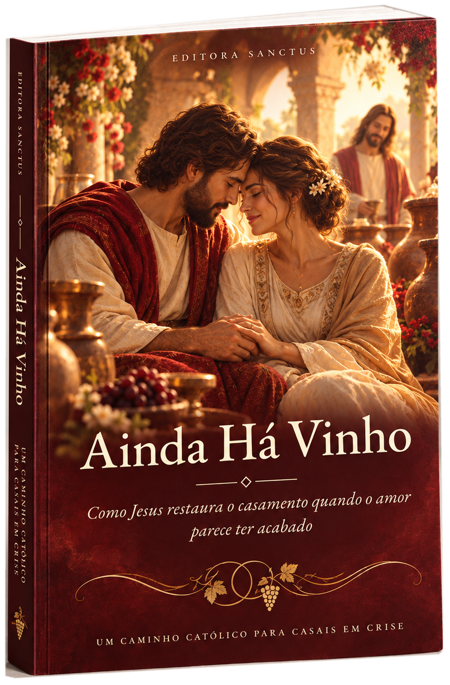
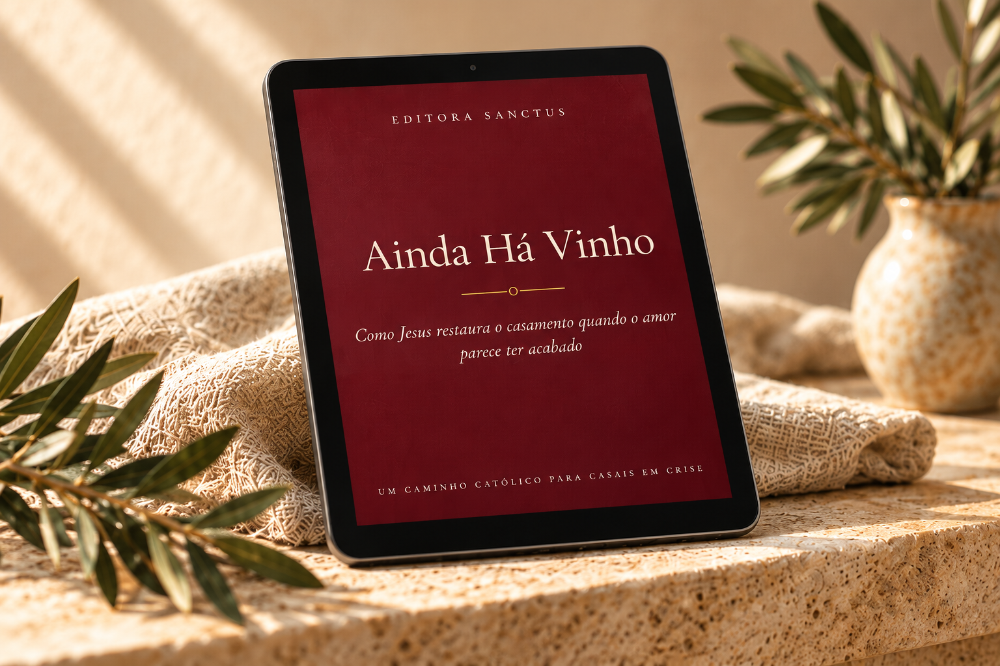

UMA LEITURA. UMA NOVA POSSIBILIDADE.
Quando tudo parece ter acabado, ainda há vinho.
Um caminho católico, em 40 dias, para voltar a conversar, curar as mágoas e reconstruir o casamento à luz da fé, mesmo que hoje pareça que o amor acabou.

A casa é a mesma.
Mas algo mudou.
Se as conversas ficaram difíceis e você ainda deseja cuidar do casamento, este livro oferece reflexões para começar com sinceridade, mesmo que a leitura seja feita individualmente.
Quero o e-book por R$39,90As conversas se tornam difíceis ou acabam em conflito.
Há uma distância emocional mesmo compartilhando a rotina.
Existe vontade de cuidar da relação, mas falta clareza sobre como começar.

Um conteúdo para ler, refletir e praticar.
O e-book Ainda Há Vinho reúne leituras, exercícios e orações para acompanhar a jornada de quem busca reconstruir o diálogo à luz da fé católica.
Dentro do e-book:
- 14 capítulos nas etapas Entender, Curar e Reconstruir
- Um plano prático de 40 dias para o casal
- Orações pelo casamento, incluindo a oração de Tobias e Sara
- Uma fórmula para renovar as promessas matrimoniais
- Orientações para ler a dois ou sozinho(a), mesmo sem a participação do cônjuge
✧ E-book digital · Leia no seu ritmo
Veja como a jornada está organizadaUma jornada em três etapas.
Cada casamento tem sua história. A leitura organiza reflexões e práticas em três movimentos, sem oferecer soluções prontas.
- 01 / PRIMEIRO PASSO
Entender
Reconhecer os silêncios, as distâncias e o que está acontecendo entre vocês, sem fugir da verdade.
- 02 / SEGUNDO PASSO
Curar
Acolher as feridas, refletir sobre o perdão e abrir espaço para a escuta, a oração e o cuidado.
- 03 / TERCEIRO PASSO
Reconstruir
Repensar escolhas, cultivar o diálogo e considerar, com responsabilidade, os próximos passos da relação.
UMA MENSAGEM DE ESPERANÇA
“Fazei tudo o que Ele vos disser.”
JOÃO 2,5 · AS BODAS DE CANÁ
Na história das bodas de Caná, a falta de vinho não foi o fim da celebração. É dessa imagem que nasce o convite deste livro: reconhecer a falta, buscar direção e continuar a caminhada com fé.
Comece sua leitura com clareza e fé.
Garanta seu exemplar digital de Ainda Há Vinho. Um percurso de 40 dias para ler no seu tempo, sozinho(a) ou a dois.
Sua compra inclui:
- E-book digital com 14 capítulos e plano de 40 dias
- Reflexões, exercícios e orações para o casamento
- Acesso enviado por e-mail após a confirmação da compra
Garantia de 7 dias. Se a leitura não fizer sentido para você, basta pedir o reembolso e devolvemos 100% do valor. Sem perguntas.
Compra processada pela Hotmart Consulte os detalhes antes de finalizar
Sobre a Editora Sanctus.
Nascemos para levar às famílias católicas materiais de fé, cuidadosos e fiéis ao ensinamento da Igreja. Ainda Há Vinho foi escrito para casais que não querem desistir, mas não sabem por onde recomeçar.
Antes de começar a leitura.
O que você precisa saber sobre a proposta de Ainda Há Vinho.
O livro é físico ou digital?
A oferta deste site é de um e-book digital. A imagem do livro é uma representação ilustrativa da capa. Confira os detalhes de entrega no checkout.
Posso fazer a leitura sozinho(a)?
Sim. A leitura pode ser feita individualmente e no seu próprio ritmo, mesmo que seu cônjuge não participe nesse momento.
Este material substitui terapia ou orientação profissional?
Não. O livro é uma proposta de reflexão espiritual e não substitui acompanhamento psicológico, médico, pastoral ou profissional quando necessário.
Como faço para comprar?
Clique no botão de aquisição para ir à Hotmart. Confira preço, forma de pagamento, entrega e políticas aplicáveis antes de concluir a compra.